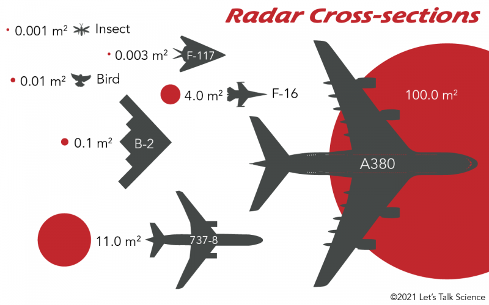

Table of contents |
|---|
| Abstract |
| Introduction |
| Analysis and Discussion |
| References |
Stealth technology’s improved military aviation by significantly diminishing aircraft’s visibility to
radar and infrared sensors. Although, it has not rendered radar and heat-seeking technologies redundant yet.
In response to the difficulties posed by stealth, radar systems have adapted with large transformations such as
low-frequency radar,which is less affected by stealth materials, and multi-static radar, which detects signals
from multiple angles. Additionally, infrared tracking systems continue to improve, especially in identifying heat
signatures from afterburner use. Despite the effectiveness of stealth, these detection technologies remain critical,
adapting to counter stealth capabilities. This ongoing technological arms race allows that both stealth and detection
systems continue to evolve in tandem, keeping radar and heat-seeking technologies relevant in modern air combat.
Stealth technology has been a highlight of today’s military aviation, especially with the induction of fifth-generation
aircrafts like the F-22 Raptor, F-35 Lightning II, Sukhoi Su-57 and the Chinese JC-20. The design of these aircraft is
utilizing sophisticated technology that reduces the surface area (radar cross-section,” RCS”) on which radar can be reflected
to detect oncoming aircraft and infrared signature (the amount of heat an aircraft emits),making them harder to detect by
traditional radar and heat-seeking systems. Although, despite large advancements in stealth technology, radar and heat-seeking
technology have not been left completely obsolete. Instead, both technologies have continued to develop alongside stealth,
with each driving improvements in the other’s respective fields. This essay will explore the reasons why radar and heat-seeking
technology remain pertinent, even though stealth capabilities act efficiently against these systems.
1. Evolution of Radar Technology
1.1 Low-Frequency Radar
One of the big leaps forward in radar technology has been the rival of low-frequency radar systems.
Stealth technology's primary design focus is to render high-frequency radar useless, e.g. X-band radar,
used by majority of today’s air defense systems & airborne radars (Eden, 2016). But, low-frequency radar,
which works both in VHF (Very High Frequency) and UHF (Ultra High Frequency) bands, is less affected by
the shape and composite of stealth materials Welch, 1989). Aircraft utilizing stealth design characteristics
are more efficient in reducing their radar cross-section in higher-frequency bands but are often more
detectable by low-frequency radars due to the physical size of the aircraft and the limits of stealth
material’s shaping in lower-frequency ranges (Sweetman, 2019).

Low-frequency radar systems have further revived interest among nations seeking to counter the threat of
stealth aircraft. While these systems are normally less precise than high-frequency radars and can be prone
to clutter from ground reflections, they can still serve as early warning systems (Goure, 2019). When a stealth
(5th Generation) aircraft is detected by a low-frequency radar, the high-frequency radar can then be cued to
track and engage the target (Kennedy, 1993). Combining these radar systems allows for a layered technique towards
enemy aircraft, hindering the stealth advantages.
1.2 Multi-Static Radar
Further advancements in radar technology are utilizing multi-static radar, comprising of multiple transmitters
and receivers placed at various locations. In conventional radar systems (monostatic), the transmitter and
receiver are positioned alongside each other, aiding stealth aircraft in reducing their radar cross-section by
reflecting signals away from the radar source (Welch, 1989). Multi-static radar detects radar signals reflected
from different angles, making it difficult for stealth aircraft to evade detection (Davies & Barno, 2020).
Multi-static radar networks can be integrated with various sensors, e.g. infrared systems, to enhance detection
capabilities. As these systems continue to advance, it’s likely they’ll pose a significant challenge to stealth
aircraft, particularly in contested environments where adversaries deploy a variety of sensor technologies to
track stealthy platforms (Kim, 2023).
2. The Limitations of Stealth Technology
2.1 Limited Frequency Coverage
On a fundamental level, stealth technology is limited in combatting various radar types. As stealth aircraft are
normally designed to evade detection using high-frequency radar. But they often struggle in reducing their radar
cross-section in low-frequency bands (Goure, 2019). This is more evident when understanding that modern air defence
systems often have a combination of radar types,including low-frequency radar for early warning and high-frequency
radar for target tracking and engagement (Davis and Barno, 2014).
Furthermore, stealth outer layer coatings and materials degrade over time, particularly when exposed to the elements
(the environment it's operating in) such as moisture, temperature fluctuations, and operational wear and tear (Tariq, 2019).
Maintenance of these stealth features is costly and time-consuming, making it difficult to keep stealth aircraft in
a constant state of readiness with the average price of an F-35 or F-22 being $100-122 million (Goure, 2019). In long
term and large-scale conflict scenarios, the ability to maintain stealth may diminish, making aircraft more vulnerable
to detection by advanced radar and infrared systems (Lee, 2019).

2.2 Thermal Signature Challenges
Along with the difficulties posed by radar, stealth aircraft also face challenges in reducing their infrared signatures.
Such as using afterburners creates a significant heat plume that can be detected by modern Infrared Search & Track systems
(IRST)(Goure, 2019). While stealth aircraft are designed to decrease their thermal signature output, they can’t eliminate
the heat generated by their engines; combustion being a vital process for engines to work (Kenndy, 1993). This makes them
susceptible to detection by heat-seeking missiles and infrared sensors, particularly when flying at high speeds or engaging
in combat manoeuvres that require the use of afterburners (Lee, 2023).
Conclusion
Stealth technology has thoroughly changed the foundations of modern air combat, with air systems able to penetrate enemy
airspace with lower risk of detection. But it hasn’t made radar and heat-seeking technology obsolete. These technologies
have evolved in response to the threats caused by stealth aircraft, with innovations such as low-frequency radar, multi-static
radar, and advanced IRST systems allowing stealthy platforms to still be detected and tracked. Therefore, modern air combat
has become a cat-and-mouse game, with stealth technology and sensor systems continuing to develop in tandem. Rather than
obsolescence, radar and heat-seeking technologies have been adapted to meet the demands of an era where stealth aircraft
play a prominent role.
Kennedy,Ahmad, H., & Tariq, A., 2019. Stealth technology: Methods and composite materials—A review. Society of Plastics Engineers. Available here
Davis, M., & Barno, D., 2014. The Enduring Need for Electronic Attack in Air Operations. Centre for New American Security. Available here
James, D., & Goure, D., 2019. Fifth Generation Aircraft: Changing the Face of Aerial Warfare. The implications for Fifth Generation aircraft in Transatlantic Air Power, pp. 9-11. Available here
Kennedy, K., 1993. Stealth: A revolutionary change in Air Warfare. Naval War College Review, Vol. 46, No.2, pp. 118-136. Available here
Kim, S., & Lee, S., 2023. Carbon-Based Radar Absorbing Materials toward Stealth Technologies. Advanced Sciences, Vol. 10, Issue 32. Available here
Welch, J., 1989. Assessing the Value of Stealthy Aircraft and Cruise Missiles. International Security, Vol. 14, No. 2, pp. 46-63. Available here